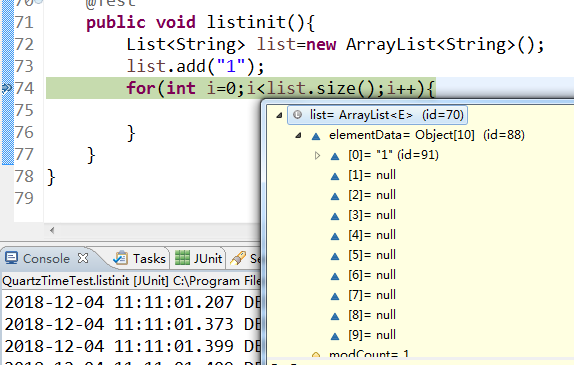
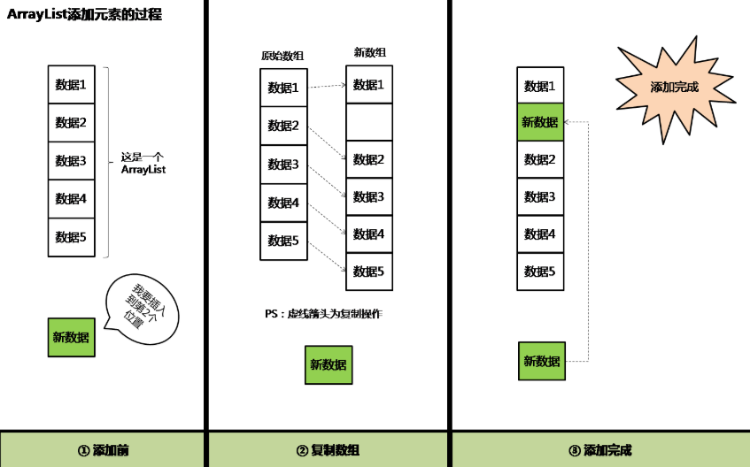
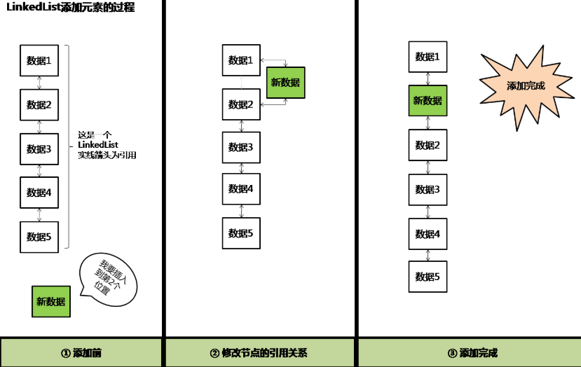

前言
接触JAVA一年有余,对于JAVA基础从未认真的进行过总结,导致一些基础问题云里雾里,故开篇对JAVA基础做一次总结,本篇为第五篇,JAVA集合中的ArrayList;
正篇
ArrayList的概述
ArrayList是基于数组实现的,是一个动态数组,其容量能自动增长.ArrayList不是线程安全的,只能用在单线程环境下.实现了Serializable接口,因此它支持序列化,能够通过序列化传输;实现了RandomAccess接口,支持快速随机访问,实际上就是通过下标序号进行快速访问;实现了Cloneable接口,能被克隆.
ArrayList的初始化
transient: 当对象被序列化时（写入字节序列到目标文件）时，transient阻止实例中那些用此关键字声明的变量持久化
2
3
4
5
6
7
8
9
10
11
12
13
14
15
16
* The array buffer into which the elements of the ArrayList are stored.
* The capacity of the ArrayList is the length of this array buffer. Any
* empty ArrayList with elementData == DEFAULTCAPACITY_EMPTY_ELEMENTDATA
* will be expanded to DEFAULT_CAPACITY when the first element is added.
*/
transient Object[] elementData; // non-private to simplify nested class access
/**
* 初始化大小
*/
private static final int DEFAULT_CAPACITY = 10;
/*
*下面这个是共享空常量数组
*/
private static final Object[] DEFAULTCAPACITY_EMPTY_ELEMENTDATA = {};
当我们new ArrayList<>()时:
2
3
4
5
6
7
* Constructs an empty list with an initial capacity of ten.
*/
public ArrayList() {
// DEFAULTCAPACITY_EMPTY_ELEMENTDATA是空数组
this.elementData = DEFAULTCAPACITY_EMPTY_ELEMENTDATA;
}

当我们初始化ArrayList并传入初始化容量时,new ArrayList<>(6):
2
3
4
5
6
7
8
9
10
11
12
13
14
15
16
17
* 构造一个具有指定初始容量的空列表
*
* @param 初始容量列表的初始值
* @throws 如果为负数,则抛出IllegalArgumentException异常
*
*/
public ArrayList(int initialCapacity) {
if (initialCapacity > 0) {
this.elementData = new Object[initialCapacity];
} else if (initialCapacity == 0) {
this.elementData = EMPTY_ELEMENTDATA;
} else {
throw new IllegalArgumentException("Illegal Capacity: "+
initialCapacity);
}
}
如何动态增长
在ArrayList类中的grow()方法中,当容量超出限制时,会增加50%的容量,每次扩容都采用System.arrayCopy()复制到新的数组,因此,在我们确定数组的大小时,可以在初始化时给定固定大小,避免自动扩容浪费资源,ArrayList默认初始数组的大小为10;
2
3
4
5
6
7
8
9
10
11
12
13
14
15
16
17
18
19
*增加容量，以确保它至少能容纳
*由最小容量参数指定的元素数。
* @param mincapacity所需的最小容量
*/
private void grow(int minCapacity) {
// overflow-conscious code
int oldCapacity = elementData.length;
//>>位运算，右移动一位。 整体相当于newCapacity =oldCapacity + 0.5 * oldCapacity
// jdk1.7采用位运算比以前的计算方式更快
int newCapacity = oldCapacity + (oldCapacity >> 1);
if (newCapacity - minCapacity < 0)
newCapacity = minCapacity;
//jdk1.7这里增加了对元素个数的最大个数判断,jdk1.7以前是没有最大值判断的，MAX_ARRAY_SIZE 为int最大值减去8（不清楚为什么用这个值做比较）
if (newCapacity - MAX_ARRAY_SIZE > 0)
newCapacity = hugeCapacity(minCapacity);
// 最重要的复制元素方法
elementData = Arrays.copyOf(elementData, newCapacity);
}
ps:当第第10个被赋值时list是不会增长长度的,因为此时不需要开辟新的内存当第11个时将执行会新开辟内存 （if (minCapacity > oldCapacity) 为真 ）因为包含第11个,所以新增后数组长度则为 10 + 10/2 + 1 ,但是实际上未赋值的为5,也就是说每次开辟新内存时,都需要多开辟1为当前赋值用;
ps:在这里有一个疑问，为什么每次扩容处理会是1.5倍，而不是2.5、3、4倍呢？通过google查找，发现1.5倍的扩容是最好的倍数。因为一次性扩容太大(例如2.5倍)可能会浪费更多的内存(1.5倍最多浪费33%，而2.5被最多会浪费60%，3.5倍则会浪费71%……)。但是一次性扩容太小，需要多次对数组重新分配内存，对性能消耗比较严重。所以1.5倍刚刚好，既能满足性能需求，也不会造成很大的内存消耗。本段内容来源于博客链接
List和ArrayList是什么关系
List是一个接口,而ArrayList是List接口的一个实现类,ArrayList类继承并实现了List接口,因此,List接口不能被构造.
ArrayList和LinkedList的区别
1. ArrayList是实现了基于动态数组的数据结构,LinkedList基于链表的数据结构.
2. 对于随机访问get和set,ArrayList绝对优于LinkedList,因为LinkedList要移动指针.
3. 对于新增和删除操作add和remove,LinkedList比较占优势,因为ArrayList要移动数据.
ArrayList和Vector的区别
1. Vector和ArrayList几乎是完全相同的,唯一的区别在于Vector是同步类(synchronized),属于强同步类.因此开销就比ArrayList要大,访问要慢.正常情况下,大多数的Java程序员使用ArrayList而不是Vector,因为同步完全可以由程序员自己来控制.
2. Vector每次扩容请求其大小的2倍空间,而ArrayList是1.5倍.
3. Vector还有一个子类Stack.
ArrayList中的TrimToSize()
源码如下:
2
3
4
5
6
7
8
9
10
11
12
13
* Trims the capacity of this <tt>ArrayList</tt> instance to be the
* list's current size. An application can use this operation to minimize
* the storage of an <tt>ArrayList</tt> instance.
*/
public void trimToSize() {
modCount++;
if (size < elementData.length) {
elementData = (size == 0)
? EMPTY_ELEMENTDATA
: Arrays.copyOf(elementData, size);
}
}
考虑这样一种情形,当某个应用需要,一个ArrayList扩容到比如size=10000,之后经过一系列remove操作size=15,在后面的很长一段时间内这个ArrayList的size一直保持在<100以内,那么就造成了很大的空间浪费,这时候建议显式调用一下trimToSize()这个方法,以优化一下内存空间.
或者在一个ArrayList中的容量已经固定,但是由于之前每次扩容都扩充50%,所以有一定的空间浪费,可以调用trimToSize()消除这些空间上的浪费.
面试题
ArrayList的大小是如何自动增加的?
在每次试图向ArrayList中增加一个对象的时候,Java会去检查ArrayList,以确保已存在的数组中有足够的容量来存储这个新的对象,如果没有足够容量的话,那么就会新建一个长度更长的数组,旧的数组就会使用Arrays.copyOf()方法被复制到新的数组中,
现有的数组引用指向新的数组.
什么情况下你会使用ArrayList？什么时候你会选择LinkedList？
熟记ArrayList和LinkedList的区别,当需要进行频繁的查询时,选择ArrayList,而当需要进行删除或者增加时,应当选择LinkedList;
ArrayList是一个可变长数组，插入数据时，则需要先将原始数组中的数据复制到一个新的数组，随后再将数据赋值到新数组的指定位置；删除数据时，也是将原始数组中要保留的数据复制到一个新的数组;
LinkedList是一个由相互引用的节点组成的双向链表，那么当把数据插入至该链表某个位置时，该数据就会被组装成一个新的节点，随后只需改变链表中对应的两个节点之间的引用关系，使它们指向新节点，即可完成插入；同样的道理，删除数据时，只需删除对应节点的引用即可


总结
当点开ArrayList的源码时,看到ArrayList的三种构造函数(虽然本篇只说明了两种,第三种不太理解,故后期更新),通过源码,可以清晰的看到ArrayList是如何初始化的,它的初始化大小是多少,当我们试图向容量已满的ArrayList中插入内容时,它是如何进行动态扩容的,以及在源码中的trimToSize在对数组内容变小对数组的容量进行缩小的优化等.